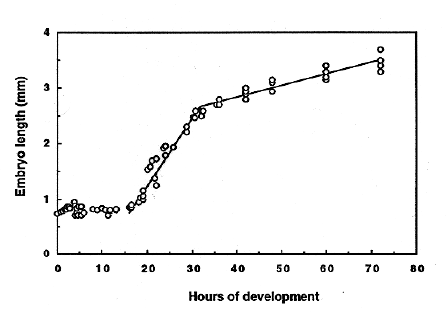

Modified from:
Kimmel et al., 1955.
Developmental Dynamics 203:253-310. Copyright © 1995 Wiley-Liss, Inc.
Reprinted only by permission of Wiley-Liss, a subsidiary of John Wiley &
Sons, Inc.
Fig. 16. Embryo length as a function of time of development (at 28.5C). Embryo length, at any stage, refers to embryo's longest dimension. Approximately no change in length occurs during the first 16 hours (through the 14-somite stage). Tail and then head straightening produce a lengthening of about 125 µm/hr between 16 and 32 h. Then lengthening, due to growth, occurs at an approximately constant rate of about 20 µm/hour through the remainder of embryogenesis (and into the early larval period; not shown). We took the measurements with an ocular graticle, using a dissecting microscope. Each data point represents the mean length in groups of embryos (generally 5-15; not less than 3) developing together. Data from several separate experiments are included this figure.

Figure 16